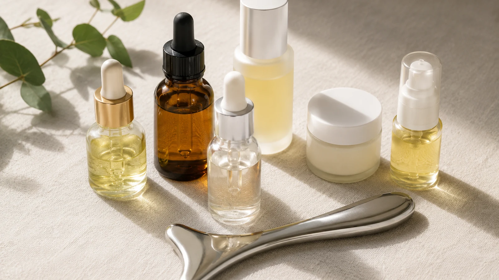

The Bojin Journal · The method
Which Oil or Cream Should You Use for Bojin?

Once a student is convinced she needs to use something for glide, the next question is always the same: which something? She's ready to buy a special "bojin oil," and I always stop her there. You almost certainly own the right product already. What matters isn't the label, it's matching the slip to your skin and the season, and that's a decision you can make in about a minute with what's in your bathroom.
The product has exactly one job
Before choosing, be clear on what you're choosing for. You are not buying a treatment or a special "bojin" product; you are choosing a texture that feels comfortable for your skin. There is no magic bottle you have to buy. If you are still deciding whether to work dry or use a glide layer at all, start with the dry-or-with-oil guide. This page starts after that question: which product should you reach for?
Choose your glide by two things: how dry your skin runs, and the time of year. Drier skin and colder months want a richer oil; oilier skin and warmer months do fine with a lighter oil or a rich cream. The test is simple, the tool should glide for the whole session without ever dragging.

A one-minute way to choose
Run yourself through this and you'll land on the right pick without overthinking it.

Dry or mature skin: reach for a facial oil
Oils give the longest, smoothest slip and feed thirsty skin at the same time. A light facial oil like squalane or jojoba is a reliable everyday choice.
Oily or breakout-prone skin: a light oil or a rich moisturizer
A lighter facial oil or simply your regular rich cream gives enough glide without feeling heavy. Watch how your skin responds and lean lighter if it feels congested.
Sensitive or reactive skin: the plainest thing you own
A simple, fragrance-free oil or moisturizer with a short ingredient list. Fewer ingredients, fewer surprises.
Adjust for the season
Go richer in winter when skin is drier and the tool wants to catch, lighter in summer when your own skin brings more slip. The same face can want two different products across the year.
Keep the choice simple
Pick the product that feels comfortable on your skin and does not leave it feeling overloaded. If you need help with the dry-versus-slip technique itself, seedry, or with oil?
The short avoid list
A few things make poor glides, and it's worth knowing them. Don't use your actives as your slip: retinol, exfoliating acids, and strong vitamin C aren't meant to be dragged across the skin under a tool, and doing so invites irritation. Skip heavily fragranced lotions for the same reason. Heavy kitchen oils like coconut or olive will technically glide, but they sit on the surface and can clog some skin, so a proper facial oil is the safer habit. Keep the glide simple and neutral, and let your treatment products do their work at a separate step.
You don't need a special bottle with a special name. You need enough clean slip for your skin, today, in this season, and you almost certainly already have it. Save your money for something that isn't just doing the job your moisturizer already does.
Quick answers
Do I need to buy a special bojin oil?
No. The job of the product is only to give the tool enough slip so it glides instead of dragging. A facial oil you already own, or a rich moisturizer, does that. There's no special bojin oil you have to buy to start, and anyone insisting otherwise is selling something.
Oil or cream, which is better?
Oil usually gives longer, smoother slip and suits drier or more mature skin. A rich cream works too and can feel better on oilier or more reactive skin. The honest test is whether the tool glides for the whole session without dragging; if it does, you chose right.
Is coconut oil or olive oil from the kitchen okay?
They'll glide, but heavier kitchen oils sit on the surface and can clog some skin, so a lighter facial oil made for the face is the safer everyday pick. If a kitchen oil is all you have for one session, fine, just watch how your skin responds and switch to a facial oil for regular use.
What should I avoid using?
Skip anything with active ingredients or fragrance as your glide, retinol, acids, strong vitamin C, or heavily scented lotions, since dragging a tool over those can irritate. Keep the glide simple and neutral, and save the actives for a separate step at a separate time.
Start with what you already own
You do not need to buy a special product to begin. My free 3-minute video shows a gentle, method-led routine you can adapt with a simple product that feels comfortable on your skin.
Watch the free 3-min videoYu-Ting Lan is a Taiwan-based international bojin instructor and the founder of Héhé Studio. She has taught her bojin method to more than a thousand students, from complete beginners to grandmothers, across Taiwan, Hong Kong, and Malaysia.